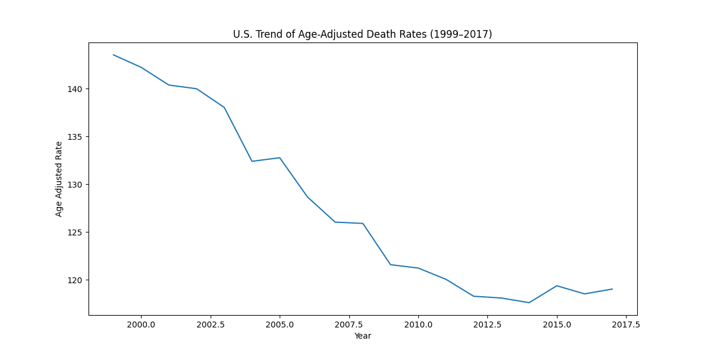
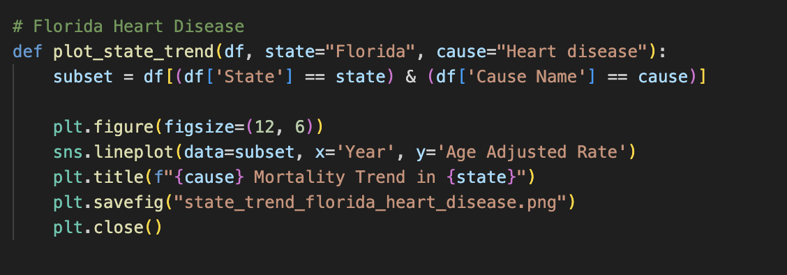
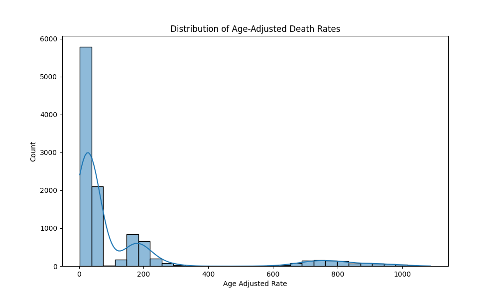
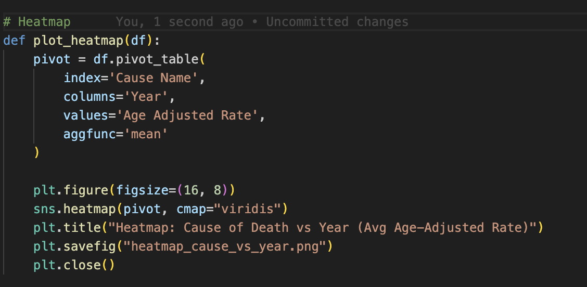
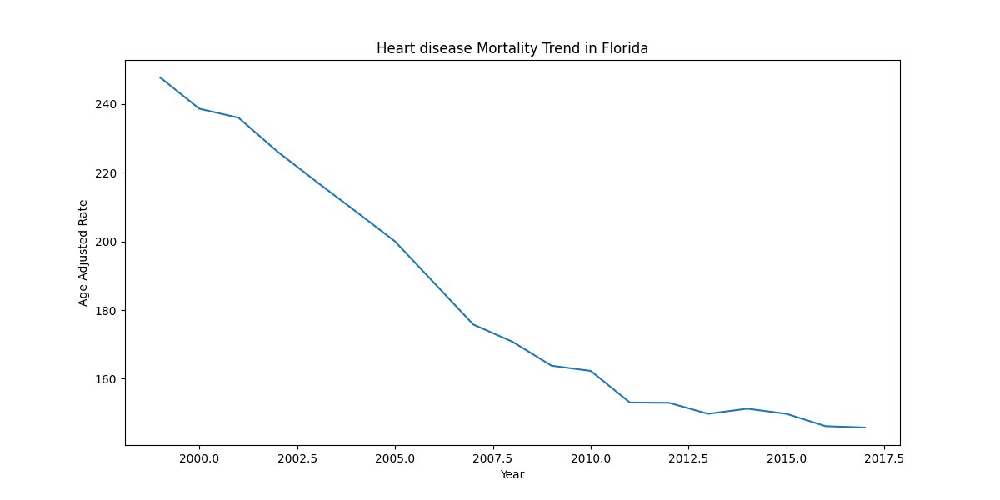
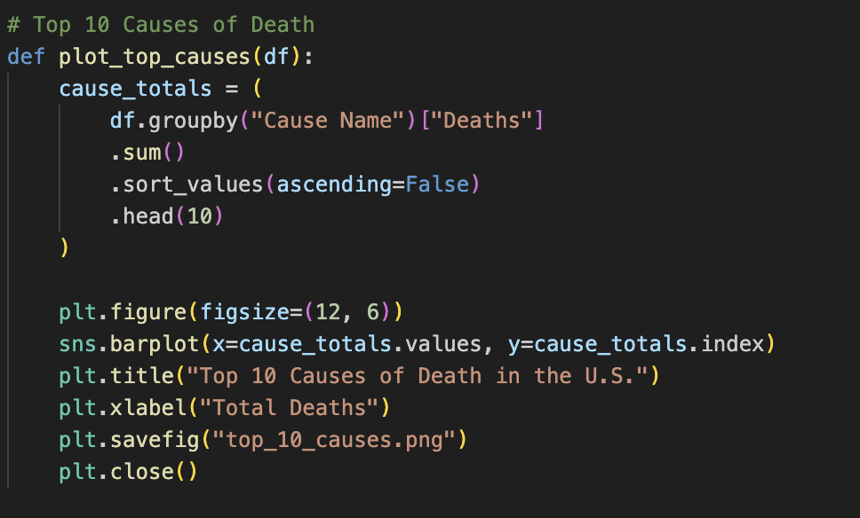
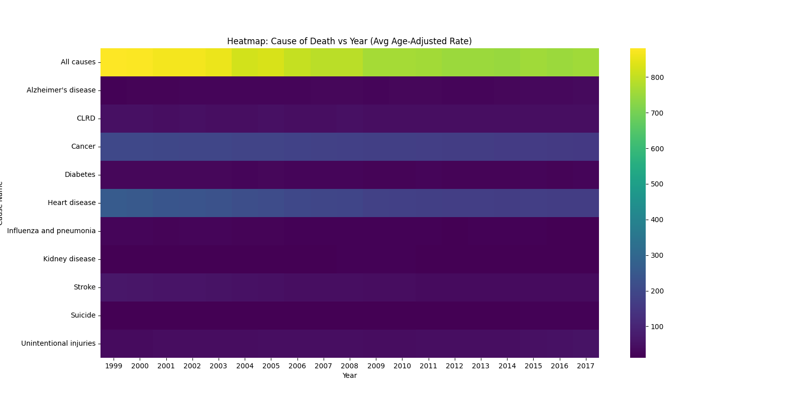

LIS 4317 Final Project
Dataset
CDC Open Data Portal:
Mortality statistics for each U.S. state by year, grouped by cause of death
https://data.cdc.gov/resource/bi63-dtpu.csv?$limit=500000
I chose this dataset because it is a trusted source the CDC. This dataset also contains clean numeric and categorical data, and allows meaningful analysis of national health trends over time.
Problem Description/ Purpose
The purpose of this project is to answer the following questions:
- How have age-adjusted death rates changed over time?
- Which causes account for the highest number of deaths?
- How variable are death rates across the population?
- How do trends differ for a specific cause in a specific state?
The goal of this project is to identify trends and patterns in the causes of death in the USA between 1999 and 2017.
Solution & Technical Approach
I completed this project using Python with the following libraries: Pandas, Matplotlib, and Seaborn. The data is fetched from a CDC web endpoint when the script is run and saved to a pandas DataFrame. The data is then cleaned and transformed, correcting field types and handling null values. This dataset comes extremely normalized from the API and little transformation is needed. From this cleaned DataFrame, I then generated all 5 visualizations for this project.
- Loading the dataset directly from the CDC API
- Cleaning the data by renaming fields and removing missing values
- Creating required visualizations:
- Time series line chart
- Ranking bar chart
- Distribution histogram
- State-level trend chart
- Multivariate heatmap
- Interpreting each visualization to form conclusions
This approach follows the statistical visualization techniques from Chapter 13, including trend detection, ranking, distribution analysis, and multivariate comparison.
Visualizations & Interpretation
1. U.S. Age-Adjusted Mortality Trend
Death rates show a gradual downward trend from 1999–2017, reflecting improvements in healthcare, disease prevention, and treatment.
2. Top 10 Causes of Death

Heart disease and cancer overwhelmingly account for the highest number of deaths, far greater than any other cause. Accidents, stroke, and chronic respiratory diseases follow.
3. Distribution of Age-Adjusted Rates
The distribution shows most death rates cluster between 50–100 per 100k, indicating consistent mortality levels across many states and causes.
4. Florida Heart Disease Trend
Heart disease mortality in Florida steadily declines over time, mirroring the national drop in cardiovascular deaths.
5. Heatmap: Causes vs Year
This multivariate heatmap highlights how different causes of death shift over time. Certain causes decline sharply (e.g., stroke), while others remain steady.
Conclusion
In conclusion, this project successfully helped me identify health trends in the United States by analyzing the CDC dataset. After analyzing the data, key patterns show that age-adjusted death rates have steadily decreased over time. This can be associated with increases in health care and treatment/prevention that have prolonged American lives.
The different visualizations made these patterns much easier to see. The trend line clearly shows the long-term drop in death rates, the ranking chart highlights how dominant the top causes are, and the distribution chart shows how similar the death rates are across many states. The Florida heart disease chart also showed the same downward trend on a more local level. The heatmap tied everything together by showing how different causes of death have changed over time.